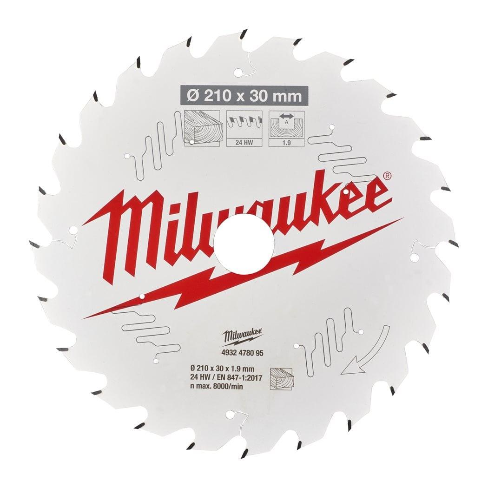
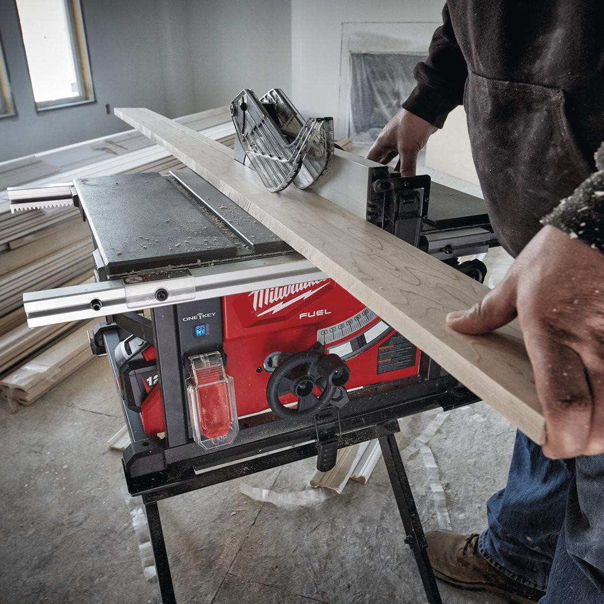
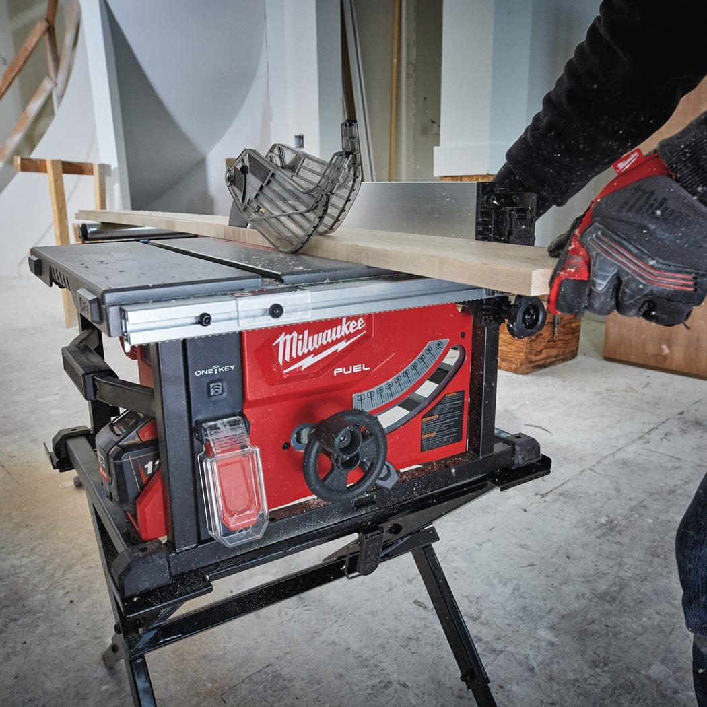

Milwaukee | CSB TS W 210x30x1.9x24ATB Table Saw Blade Wood
4932478095




Features
- PTFE coating: Cuts cooler, non stick for quicker cuts. Protects against corrosion and accumulation of resin.
- Laser cut vibration slots: Low vibration and increased accuracy. Slots are filled with polyurethane and act as shock absorbers by isolating the teeth from vibration.
- High grade laser cut steel: Guaranteed accuracy.
- Premium cobalt infused tungsten carbide: Sharp and clean cuts.
- **Standard blades without PTFE coating and vibration slots
Information
| Materials suited for | Wood|Green wood |
| Pack quantity | 1 |